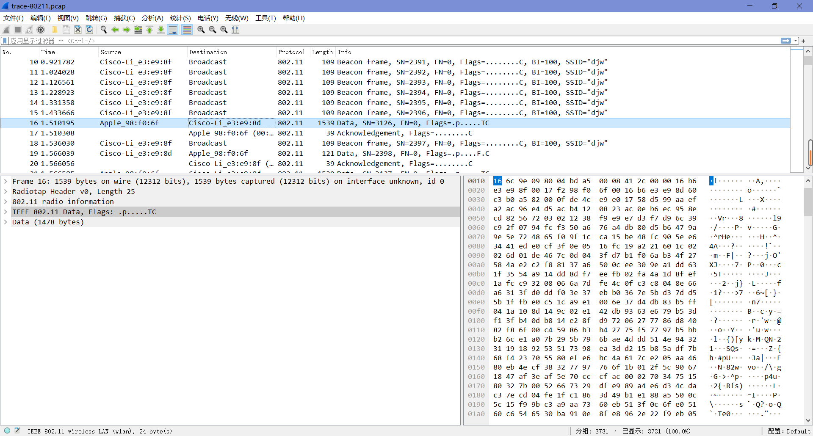
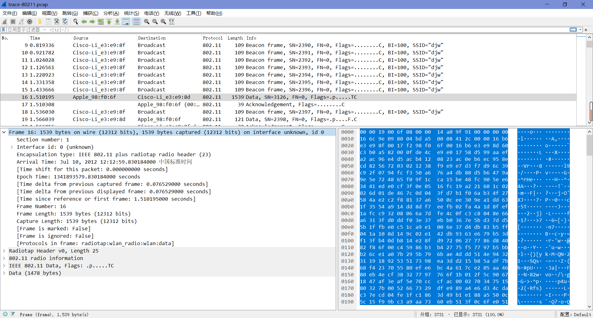
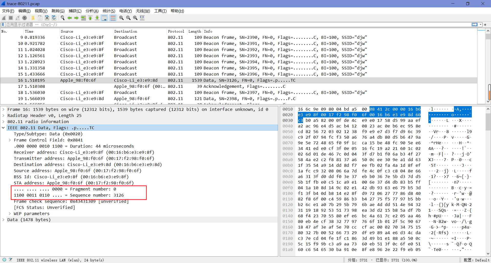
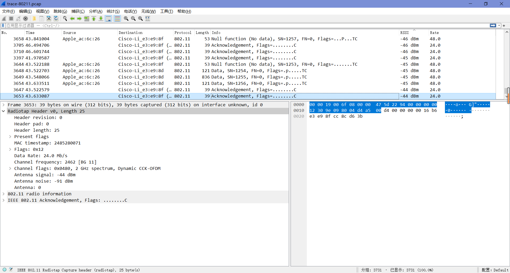

Lab4-2 802.11
1 Objective
探究802.11的物理层、链路层和管理功能。
2 Requirements
Wireshark软件。
3 Steps
Step 1: Fetch a Trace
直接打开附件里的”trace-80211.pcap”来进行探究。
Step 2: Inspect the Trace
首先，我们将研究802.11帧的格式。如下图，有许多不同种类的802.11帧被捕获在了追踪中，我们可以通过info字段来分辨他们的类型，如Beacon、Data和Acknowledgement。
我们选中一个数据帧进行查看：

“Frame”是由Wireshark添加的记录，包含了帧的时间和长度信息等。

“Radiotap”也是Wireshark添加的记录，用于捕获物理层参数，如信号的强度和调制。
“IEEE 802.11”是802.11数据帧的位。
“Data”是包含帧有效载荷数据的记录，即具有诸如LLC、IP包等更高层协议的数据。或者，可以看到更高层的协议本身。
接下来我们将重点探究”IEEE 802.11”中的内容。
“Frame Control”编码帧的类型和子类型。
“Duration”告诉计算机作为交换的一部分的附加数据包在无线媒体上需要多长时间。
“Destination address”和”Source address”（顺序取决于数据帧的具体内容）这些地址字段标识了数据包的发送者和应接收者。
“BSS Id”是无线接入点的地址。
“Fragment number”和”Sequence number”这些字段为重组和重传的帧编号，序号随着每一次新的传输而递增。

“Frame check sequence”是帧上的循环冗余校验码。
在帧有效负载被加密的情况下，还可能有一个WEP或WPA2字段，其中包含安全参数。
最后，我们再重点探究一下”Frame Control”字段的详细内容。
- “Version”是版本号，目前为0（三种类型的帧统一，均为0）。
- “Type”和”Subtype”指定帧的类型。
- “DS status”中包含了”To DS”和”From DS”的值：如果帧从计算机通过AP发送至有线网络，则将”To DS”置为1；如果帧从有线网络通过AP发送至计算机，则将”From DS”置为1。
- “More Fragments”描述了消息中是否有更多的帧。
- “Retry”描述了帧是否重传。
- “PWR MGT”意为”Power management”，设置了发送方在传输后是否进入省电休眠状态。
- “More Data”描述发送端是否有更多的帧要发送。
- “Protected”描述了帧是否用WEP/WPA2加密。
- “+HTC/Order”描述了接收端是否必须保持帧的顺序。
Step 3: 802.11 Physical Layer
现在我们已经对802.11数据帧有了一些了解，接下来我们将从物理层开始研究无线系统的其他部分。在最低层，发送和接收消息都与接收信号的频带、调制、信噪比有关，我们可以在Radiotap中的信息查看所有这些元素。
Q: What is the channel frequency?
A：展开”Radiotap Header”，即可查看”Channel frequency”的值。
要查看调制，我们可以观察数据速率值，要查看信噪比，我们可以观察SSI信号值，SSI信号值通常被称为RSSI(接收信号强度指示)。要查看这些字段，首先必须向主显示添加新列，步骤如下：
按”编辑-首选项-外观-列“的顺序依次点击以进入列显示定义面板。
点击左下角”+”以添加新的显示列。
将”Title”修改为”RSSI”，类型选择”IEEE 802.11 RSSI”。
再添加一个新的显示列，将”Title”修改为”Rate”，类型选择”IEEE 802.11 TX rate”，然后选择”OK”完成添加。
我们返回主页面，可以看到”RSSI”列和”Rate”列已成功添加。
在”Rate”列，我们可以看到各种各样的速率。也就是说，与有线以太网的帧以固定速率发送(经过以太网类型的协商)不同，无线速率根据计算机的条件和能力而变化。
Q: What rates are used? Give an ordered list of rates from lowest to highest.
A：点击”Rate”列，将帧按速率值从小到大的顺序进行排列，可以看到速率分别为1、6、12、18、24、38、48和54mbps，下面截取了部分速率区段。
在”RSSI”列，我们可以看到各种各样的RSSI值，如“-60 dBm”。RSSI是在对数刻度上测量的，其中0 dBm表示1兆瓦的功率，每+10表示大10倍，每-10表示小10倍。因此-60 dBm意味着 $10^{-9}$ 瓦，即1兆瓦的百万分之一，是非常小的功率。
信噪比是相对于噪声水平的信号水平，如下图中，信号水平为-60 dBm，噪声水平为-90 dBm，这意味着信号水平比噪声水平大1000倍，那么信噪比就为30 dB。
Q: What is the range of RSSI and hence variation in SNRs in the trace? Give this as the strongest and weakest RSSI and the dB difference between them.
A：点击”RSSI”列，将帧按RSSI值从小到大的顺序进行排列，可以看到RSSI的变化范围为-44 dBm（最强信号）到-69 dBm（最弱信号），中间相差了25分贝，前后信噪比之比约为316（$10^{2.5}≈316$）。

Step 4: 802.11 Link Layer
在”统计”菜单下，选择”会话”，然后勾选”IEEE 802.11”。
转到”IEEE 802.11”栏，我们将看到如下图所示的窗口，其中列出了每对正在通信的计算机。
大部分的活动都是在相对较小的部分对话中。低活动会话是由于来自空闲计算机的后台流量，以及偶尔从相邻无线网络捕获的少量包。BSS ID值标识一个AP。
Q: What is the BSS ID used by the most active wireless conversations? A BSS ID value identifies an AP, so this BSS ID identifies the most active AP, presumably the AP we are monitoring.
A：为了找到最活跃的无线会话使用的BSS ID，我们可以通过单击列标题对信息进行排序，可以发现，最活跃的AP的BSS ID是00:16:b6:e3:e9:8f。
我们可以在”应用显示过滤器”处输入表达式”wlan.fc.type\==”data frame””或”wlan.fc.type\==2”来只查看数据帧。
Q: How many Data frames are in the trace, and what is the most common subtype of Data frame?
A：我们可以从右下角看到当前显示帧的总数为1783，而当前显示的帧正是我们筛选得到的数据帧，所以数据帧的总数为1783。依次查看各帧的详细信息可以发现，数据帧最常见的子类型是”Data”。
通过更改筛选表达式来对Control (Type 1)和Management (Type 0)帧执行相同的操作。
Q: How many Control frames are in the trace, and what is the most common subtype?
A：用跟之前同样的方法，我们可以得到控制帧的总数为1391。依次查看各帧的详细信息可以发现，控制帧最常见的子类型是”Acknowledgement”。
Q: How many Management frames are in the trace, and what is the most common subtype?
A：同理，我们也可以得到管理帧的总数为557。依次查看各帧的详细信息可以发现，管理帧最常见的子类型是”Beacon frame”。
Q: List in the order they are sent the IEEE 802.11 fields in an Acknowledgement frame and their lengths in bytes. Do not break down the Frame Control field into subfields, as we have already looked at these details.
A：如果我们检查一个”Acknowledgement”帧的IEEE 802.11记录，我们应该看到它与数据帧相比字段很少，例如，只有一个地址，而且它非常短。这些字段分别是帧控制(2个字节)、持续时间(2个字节)、接收地址(6个字节)和帧检查序列(4个字节)。
无线传输不像有线传输那样高度可靠，但无线误差率不会很大，否则会浪费大量的介质。我们可以通过估计重传率或检查有多少帧的重试位设置在了帧控制字段（这个位表示一个帧是原始帧的重传）来估算无线误差率。
我们可以通过使用过滤器表达式来查找原始数据帧和重传数据帧的数量。例如，“wlan.fc.type \==2 && wlan.fc.retry==0”将找到原始数据帧。
Q: Give an estimate of the retransmission rate as the number of retransmissions over the number of original transmissions. Show your calculation.
A：在应用显示过滤器处输入“wlan.fc.type \==2 && wlan.fc.retry==0”来筛选原始数据帧，可以发现其个数为1430；输入“wlan.fc.type \==2 && wlan.fc.retry\==1”来筛选重传数据帧，可以发现其个数为353。由此可以估计重传率为24.69%（353/1430≈0.24685）。
最后，我们将研究电源管理。越来越多的802.11客户端设备在完成发送或接收流量时使用电源管理功能进入低功耗休眠模式。准备休眠的客户端会在帧控制字段中设置电源管理标志，我们可以使用过滤器表达式”wlan.fc.pwrmgt\==1”来搜索表明客户端将要休眠的帧。我们只需要考虑从客户端到AP的帧的省电行为，因为来自AP的帧并不表示客户端将进入睡眠状态，这些帧将有”to DS”标志设置(“wlan.fc.tods==1”)。要搜索这两个条件，可以使用“&&”或“and”组合筛选器表达式。
Q: What fraction of the frames sent to the AP signal that the client is powering down?
A：依次用”wlan.fc.tods\==1”和”wlan.fc.pwrmgt\==1 and wlan.fc.tods==1”筛选后可以发现，发送到AP的帧共822个，其中有16帧设置了电源管理标志，比例约为1.95％(16/822≈0.01946)。
Step 5: 802.11 Management
接下来，我们将研究几种类型的管理帧。
Beacon Frames
选择BSS ID为Step 4中的主AP的”Beacon Frame”。我们将看到，在一些固定的参数之后，它有一系列带标记的参数，这些参数列出了AP的功能。这些参数包括AP的SSID名称(与BSS ID相匹配的文本字符串)、它支持的数据速率以及它所运行的通道。
Q: What is the SSID of the main AP? This is one of the tagged parameters in the Beacon frame.
A：如下图，主AP的SSID为“djw”。
Q: How often are Beacon frames sent for the main AP? You may find the Beacon interval given in the Beacon frame itself, or change the Time display to be show the interval since the last frame. (Under View, select Time Display Format, and “Seconds Since Previous Displayed Packet”.)
A：如图，时间间隔为0.1024秒，约为10次/秒。
Q: What data rates does the main AP support? The rates are listed under tagged parameters.
A：如图，支持的速率为1、2、5.5、6、9、11、12、18、24、36、48、54 Mbps（其中，1、2、5.5、11Mbps速率标记为“B”，这意味着它们是802.11b遗留速率而不是802.11g速率）。
Q: What rate is the Beacon frame transmission? The answer to this question will be found on the Radiotap header, or more conveniently displayed in the column you added in an earlier step.
A：可以从Radiotap报头中找到”Beacon frame”传输速率，如下图，为1.0 Mb/s。
Association
一旦计算机通过信标或其他方式了解到AP，它必须与AP关联，并可能在使用无线网络之前对自己进行身份验证。我们将看到计算机向AP发送关联请求，直到它得到确认。如果关联成功，那么AP将返回一个关联响应，计算机将确认该响应。
Q: What are the Type and Subtype values of Association Request / Association Response frames?
A：依次查看类型为”Association …”的管理帧，可以得到关联请求/关联响应帧的类型和子类型值分别为0x0000和0x0001。
Probe Request/Response
最后，我们来简要了解探测帧。计算机可以探测特定的AP，而不是等待从信标处了解AP。探测请求(Probe Request)由计算机发送，用于测试具有特定SSID的AP是否在附近。如果被寻找的AP在附近，那么它将用探测响应进行回复。对于计算机来说，发送探测请求的无线网络是很常见的，它们以前用来加快连接到已知网络的速度。
Q: What are the Type and Subtype values for the Probe Request / Probe Response frames?
A：依次查看类型为”Probe …”的管理帧，可以得到关联请求/关联响应帧的类型和子类型值分别为0x0004和0x0005。